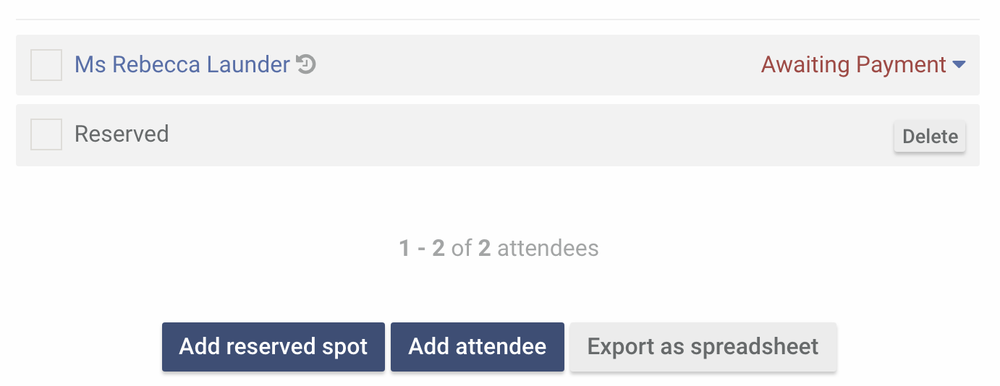
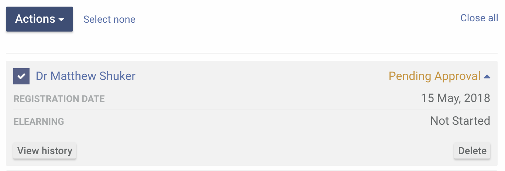
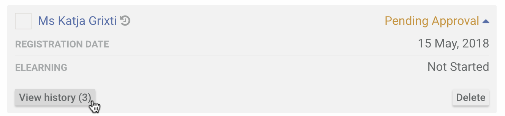
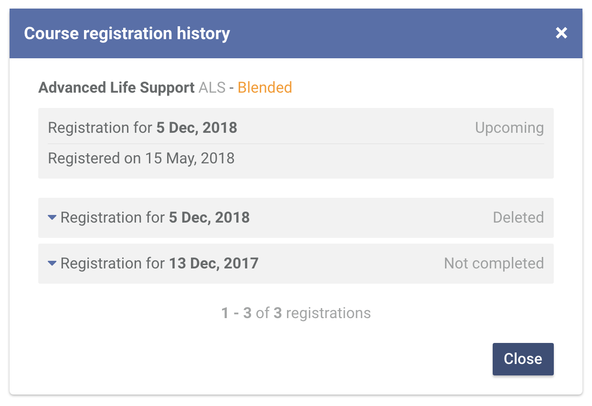
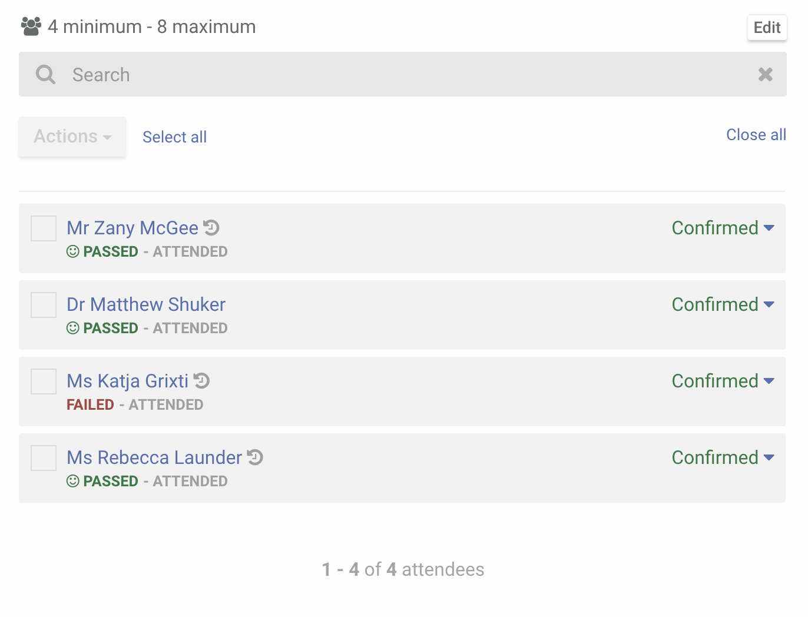

Managing course attendees
-
Attendee registration
In most cases, attendess will register themselves via the course profile page, where they can choose a location and date suitable for them.
-
Adding an attendee manually
In cases where you may need to add an attendee manually to a course booking, please make sure that the attendee has an account with CSDS first.
To add an attendee manually, click Add attendee

In the popup that appears, enter the name of the attendee you want to add.

Click the attendee's name in the results area to add them in the booking.

Choose a course price for the attendee you are adding. Then click Add.

And you're done. Just take note that an attendee that has been added manually goes straight to Awaiting payment (skips the 'Approval' step).

-
Approving course registrations
Upon registration for a course, user's receive an email to let them know their registration is Pending Approval. An email is also sent to your Pocket Centre's contact email address to inform you of the registration requiring approval.
Learn how to update your Pocket Centre contact details.
Here is an an example of what 'Pending Approval' looks like in your attendees list.

To approve a registration, select the checkbox next to the attendee you are approving.

Yes, you can select multiple attendees at once.Click the Actions dropdown and select Approve registration.

Upon approval, the attendee will receive an email letting them know that someone from your Pocket Centre will be in contact to arrange payment. The attendee's booking status will change to Awaiting Payment.

Can I decline an attendee's registration?
Yes. Just select the attendee you want to decline. From the Actions dropdown, click Decline registration. An email is sent to the attendee informing them of this action.
Can I approve someone that I declined earlier?
As long as the course is not yet full, yes you can.
-
Viewing an attendee's registration history
If an attendee has previsouly registered for a course, a "history" icon will appear at the end of their name. To view the attendee's course registration history, expand the row and click the View history button.
A popup will display a timeline of the attendee's course registration history, from most recent to oldest.
 -
Marking an attendee as paid
Marking an attendee as paid will confirm their spot the course.
Upon marking an attendee as paid, a confirmation email is sent to the attendee to inform them of the face-to-face course details (and eLearning course details, if applicable).
To mark an attendee as paid, select the checkbox next to the attendee.

From the Actions dropdown, click Mark as paid.

Their status should change from Awaiting Payment to Confirmed.

Can I mark an attendee as not paid?
Yes. Select the checkbox next to the attendee you want to mark as not paid. From the Actions dropdown, click Mark as not paid. No email is sent to the attendee when you perform this action.
-
Deleting an attendee
To delete an attendee, expand the row of the attendee and click the Delete button.
A popup will ask you to confirm this action. Click Delete to confirm. No email is sent to the attendee when you do this.

Can I add an attendee that I have deleted before?
Yes. Please refer to Adding an attendee manually.
-
Reserved spots
Reserved spots can be used to save spots (for example, a guaranteed attendee who has not yet created an account). A reserved spot is considered "confirmed" and will count towards the allocated maximum number of spots.
To add a reserved spot, click Add reserved spot.

The reserved spot should appear at the top of the list. To remove a reserved spot, click the Delete button. This action will immediately remove thes reserved spot.
-
Exporting the attendees list
Below the attendees list click the Export as spreadsheet button. This will download a CSV file that you can open in your preferred spreadsheet software.
Here's a sample of what the spreadsheet contains:

-
Mark course attendance
Course certificates are generated once attendance is marked. The only exception being eLearning certificates, which are generated automatically upon completion.
Users can access and download certificates via logging in to their own account.
To mark attendance, select the checkbox next to the attendee and from the Actions dropdown click Mark attendance.

In the popup, select "Attended" or "Did not attend". Then click Save.

Some courses also required a result to be given. Select one of the options available: Pass, Provisional Pass or Fail.

Provisional Pass requires a reason (160 characters or less) to be provided. This reason will appear on the attendee's course certificate to clearly indicate a Provisional Pass.
 -
Adding faculty
Adding faculty is a great way to schedule staff for your booking.
Faculty are Pocket Centre staff and accounts marked as 'Faculty' in their account settings.
Contact us if you can't find a faculty member in your list.To add a faculty, click Add faculty.

In the popup that appears, click the name of the faculty you want to add. You can navigate through the list or use the search bar to filter the results.

Select the faculty's role for all the days of the course.

Click Add to save against the booking.

Repeat the process to add more faculty. To remove a faculty click Remove.